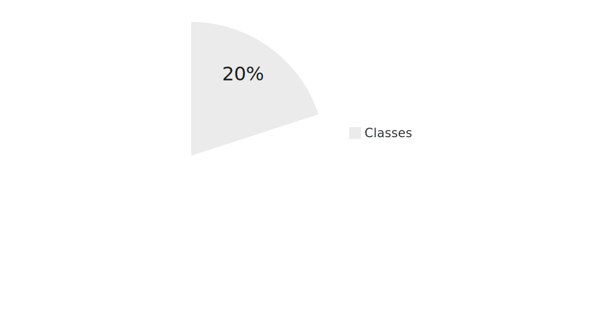
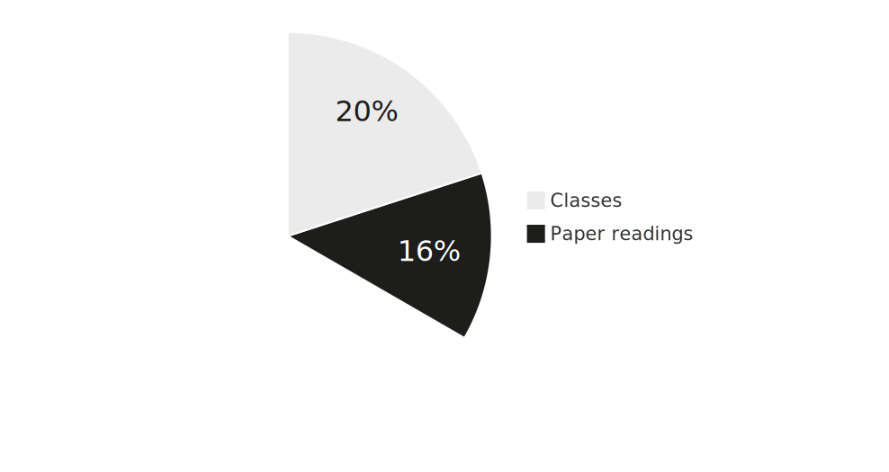

%%{init: {'theme':'base', 'themeVariables': { 'xyChart': {'backgroundColor': 'transparent', 'titleColor': '#0333ff',
'xAxisLabelColor': '#333', 'yAxisLabelColor': '#333', 'plotColorPalette': '#0333ff'}}, 'xyChart': {'width': 700,
'height': 350}}}%%
xychart-beta
x-axis "Grade" ["1,00", "1,30", "1,70", "2,00", "2,30", "2,70", "3,00", "3,30", "3,70", "4,00", "5,00"]
y-axis "Count" 0 --> 20
bar [4, 3, 1, 3, 2, 3, 7, 10, 5, 9, 20]
Administrivia 🧐
Strategy and Performance Management
Andy Weeger
Neu-Ulm University of Applied Sciences
July 22, 2025
Motivation
There is more vacuity about strategy than about any other topic in business today. John Kay, Financial Times in Mintzberg et al. (2005)
Discussion
How would you explain the term strategy?
Contents
In this course, we will have a look at following topics
- Understanding strategy
— definition, formation, and competitive positioning (lectures 1-3) - Building strategic advantage
— resources, capabilities, and organizational design (lectures 4-6) - Performance management and control
— measuring and managing strategic performance (lectures 7-9)
Learning objectives
During this course, you should advance your skills in the following areas:
- Understanding of concepts and taxonomies of strategy
- Basic knowledge of underlying theories of strategic management and decision-making
- Understanding of tools and frameworks for the development, analysis and implementation of strategies
- Knowledge of key concepts and frameworks for decision making under uncertainty
- Understanding of the role of IT strategy and its relationship with business strategy
- Ability to work independently with literature to derive key-insights
- Application of concepts, tools, and framework in real-life cases
Delivery
This course will be taught using traditional synchronous lectures.
The focus of the classes is to briefly introduce, discuss and apply major concepts, tools and methods of strategic management.
Many of the classes will involve group work, discussions and short presentations.
The greatest amount of work is in preparing for and following up lectures in order to become sufficiently familiar with and understand the content.
It is necessary to prepare for each session, for instance by reading a paper, details (see Table 2).
Please prepare your schedule accordingly.
Effort



Grading
Exam
There will be a written exam at the end of the semester.
The exam will
- take place during the examination weeks,
- will last 90 minutes,
- cover all contents discussed in lecture,
- focus on the application of the knowledge gained in the course.
A note on grades
| Grade | Meaning |
|---|---|
1 — very good |
A truly outstanding achievement that (not only) shows no deficiencies in the criteria mentioned, but also gives both the supervisor and external assessors an excellent impression. |
2 — good |
Work that exceeds the average requirements/performance and is easily recognizable and presentable to the outside world as a “good performance”. |
| Note | 2.5 is the average of passed assessments, i.e., an “average performance” |
3 — satisfactory |
A performance that achieves the desired goal “to a satisfactory extent”; however, deficiencies can be identified here and there. |
4 — sufficient |
A performance that “still adequately satisfies” the requirements, but deviates from the expectations placed on it in several ways. |
5 — not sufficient |
A performance that does not meet several of the criteria mentioned. |
Last year’s results
This is the grade distribution from last year (average grade 3.5):
Schedule
| Date | Topic | Preparation |
|---|---|---|
| 09.10.25 | Strategy Definition and Schools | — |
| 16.10.25 | Competitive Analysis and Positioning | Read Hallegatte (2009) |
| 23.10.25 | Resource-based Advantagesn | Read Peteraf (1993) |
| 30.11.25 | Strategy Formation | Read Mintzberg (1978), research on Netflix |
| 06.11.25 | Self-study (consolidation) | Review the contents, prepare questions |
| 13.11.25 | IT-Kongress, Q&A (12 am - 1 pm, Zoom | Review the contents, prepare questions |
| 20.11.25 | Organizational Design | Listen to Decoder and read Lorenz & Buchwald (2023) |
| 27.11.25 | Ethics and Values | Read Barnett & Salomon (2012) |
| 04.12.25 | Meta Case Study (Pt. 1) | Listen to Meta Story on Acquired |
| 11.12.25 | Corporate Performance Management | — |
| 18.12.25 | CPM and OKRs | CPM research & presentation |
| 08.01.25 | Meta Case Study (Pt. 2) | Research data for all case study tasks |
| 15.01.26 | IT Strategy | Read Chen et al. (2010) |
| 22.01.26 | Exam Preparation | Review the contents, prepare questions |
Q&A
Literature
Barnett, M. L., & Salomon, R. M. (2012). Does it pay to be really good? Addressing the shape of the relationship between social and financial performance. Strategic Management Journal, 33(11), 1304–1320.
Chen, D. Q., Mocker, M., Preston, D. S., & Teubner, A. (2010). Information systems strategy: Reconceptualization, measurement, and implications. MIS Quarterly, 233–259.
Hallegatte, S. (2009). Strategies to adapt to an uncertain climate change. Global Environmental Change, 19(2), 240–247.
Lorenz, F., & Buchwald, A. (2023). A perfect match or an arranged marriage? How chief digital officers and chief information officers perceive their relationship: A dyadic research design. European Journal of Information Systems, 32(3), 372–389.
Mintzberg, H. (1978). Patterns in strategy formation. Management Science, 24(9), 934–948.
Mintzberg, H., Ahlstrand, B. W., & Lampel, J. (2005). Strategy bites back: It is a lot more, and less, than you ever imagined–. Pearson Education.
Peteraf, M. A. (1993). The cornerstones of competitive advantage: A resource-based view. Strategic Management Journal, 14(3), 179–191.